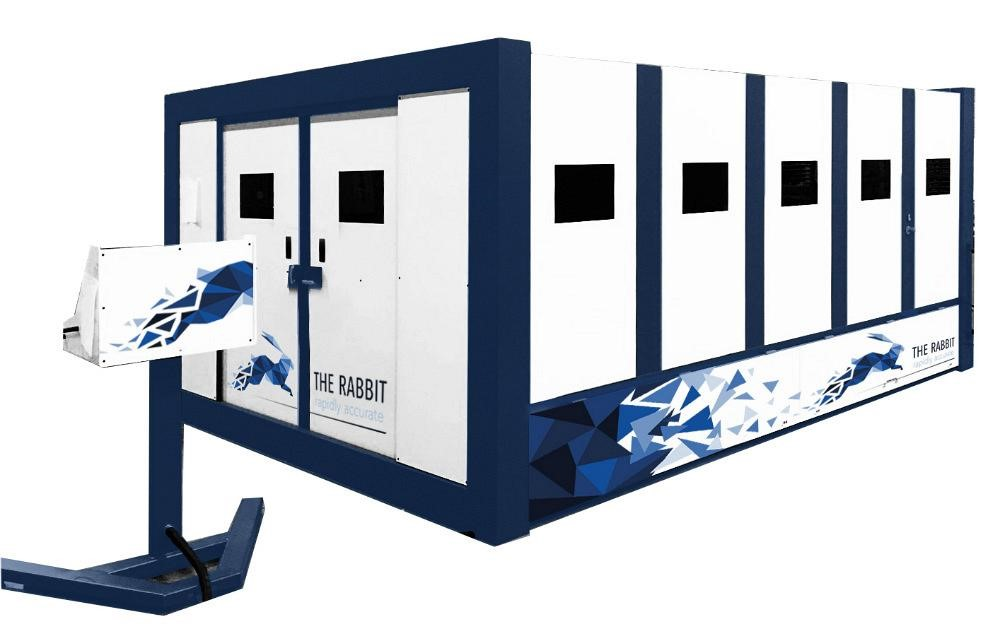
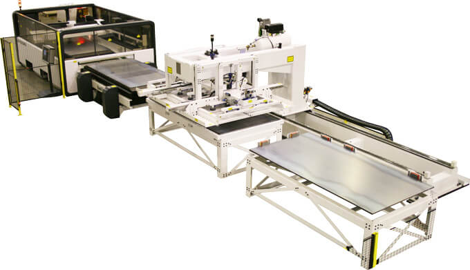

Для резки листовых заготовок, труб, профилей, а так же обьемных деталей
Установки лазерной резки Balliu серии Rabbit

RABBIT - это трехосевой высокоскоростной станок лазерной резки. Особенностью высокоскоростного режущего центра RABBIT является использование линейных двигателей для перемещения по всем осям. Все движения контролируются и управляются системой ЧПУ.
- Эта конструкция имеет ряд преимуществ:
- Хорошая фронтальная доступность.
- Масса движущихся частей (режущий портал и режущая головка) постоянна. Это означает, что на точность машины не влияет вес материала изделия.
- Очень высокая скорость и точность.
- Рама RABBIT состоит из термически стабилизированных сварных труб и пластин. Она очень тяжелая и прочная, что обеспечивает высокую точность позиционирования.Портал сделан из композитов (углеродное волокно).

Лазерный источник
Rabbit оснащен лазером Rofin Sinar. Этот тип лазера имеет следующие особенности:

Система загрузки и выгрузки
Опционально можно дооснастить машину системой загрузки и выгрузки. Новые листы можно брать с помощью присосок из стопки и автоматически загружать на стол машины. Вырезанные части могут быть извлечены из заготовки и выгружены в одну стопку (либо несколько стопок). Отходы будут также удалены. С этой системой машина может работать без участия оператора в течение длительного времени.
Ключевые особенности
| Быстрый | Оснащен 3 мощными линейными приводами для скоростей до 310 м/мин | |
| С большой зоной доступа | Оснащен дверями по 3м сторонам станка для простого и полного доступа | |
| Точный | максимальное отклонение 0,05 мм | |
| Мощный | Источники от 1.000 до 12.000 Ватт | |
| Производительный | Система смена столов, система загрузки/разгрузки | |
| Рабочая зона | 3000х1500 мм (либо другая, по запросу) | |
| Прочный | Максимальный вес заготовки - 1250 кг | |
| High-End | Система ЧПУ Siemens 840D SL; Precitec tracking sensor |
Телефон
+375 29 674 42 03Адрес
Беларусь, Минскпр. Победителей, 106